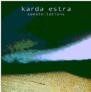

| Artist: | Karda Estra |
| Title: | Constellations |
| Label: | Cyclops CYCL130 |
| Length(s): | 43 minutes |
| Year(s) of release: | 2003 |
| Month of review: | [06/2003] |
| 1) | The Southern Cross | 5.09 |
| 2) | Hydra | 6.12 |
| 3) | Cassiopeia | 3.36 |
| 4) | Phoenix | 4.50 |
| 5) | Scorpio | 7.50 |
| 6) | Vela | 9.28 |
| 7) | Twice Around The Sun | 6.10 |
Hydra's first opening is a little more tempting than the predecessor, but as the oboe sets in, the quiet settles over us once more. Halfway through the track there's a brief roar of some distorted guitar. The clear piano towards the closing of the track has a nice feel, something enticing about it.
Cassiopeia opens up with some more oboe, later joined by classical guitar and chanting. This makes for a combination I find hard to stomach.
Phoenix combines cello and piano, with some oboe to keep one over. The persistent lack of rhythm and recurring chanting bring the term "new age" to mind. The climax has some electric guitar, creating an ever so brief reprieve.
Scorpio fortunately has both rhythm and a bit of guitar, making it a striking track. But as the oboe sets in, the accompaniment takes on a sort of overly happy humpty dumpty form. Scorpio's changes of tempo and atmosphere only help strengthening the semblance with soundtrack music.
Vela is a bit more strummy, some guitar, lots of oboe later on, all pretty sedate, not adding much to what's gone before.
Seeing Twice Around The Sun was written by Steve Hackett got my hopes up a bit, and yes, maybe there's a bit more melody in this one, but at the end of the day there's still far too much new age in it.